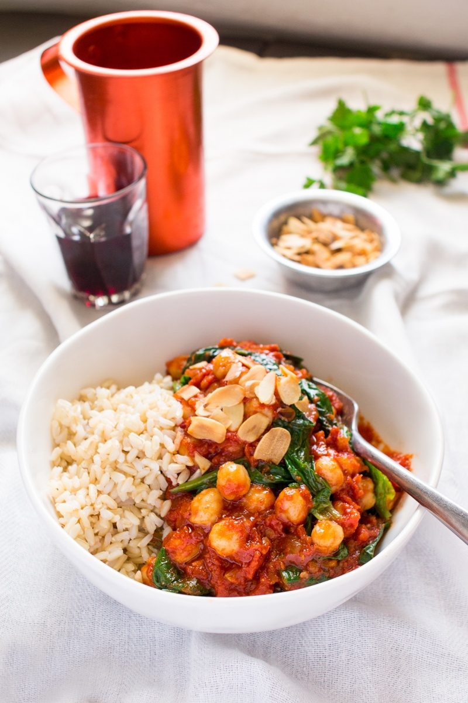

Spanish Chickpea and Chicken Mince Ragu

Description
This is a healthy, low cholesterol and high protein tomato based chickpea recipe.
Ingredients
- 2 tbsp / 30 ml oil (I used olive oil)
- 3 garlic cloves, finely chopped
- 1 red onion
- 3 tsp cumin
- 1.5 tsp smoked paprika
- 0.5 tsp cayenne pepper
- pinch of salt
- black pepper to taste
- 2x 400g tins of peeled tomatoes
- 1 tbsp tomato paste
- 1.5 cups of chickpeas
- 200g of spinach
- cooked rice
Steps
- Heat up the oil in a large frying pan (ideally with a lid). Add chopped onion and fry on a low heat until almost translucent, stirring from time to time.
- Add chopped garlic. Keep on stirring frequently until the onion is translucent and garlic softens completely and releases its beautiful aroma.
- Add all the ground spices to the fried onion and garlic mixture and stir them around well. Fry them off gently for a minute or two stirring the whole time as they burn easily.
- Add tomato paste to the pan and stir it into the onion and garlic mixture.
- Squash plum tomatoes with a potato masher in a separate bowl before adding them to the pan. Add tomatoes to the pan, salt and half of the sugar. Let the sauce thicken by simmering it on a low heat with no lid on. Give the sauce a good stir from time to time.
- Once the sauce thickens, taste it and season with some black pepper and more sugar if needed. I used 3 tsp of sugar in this recipe as my tomatoes were quite tangy, but you may not need as much.
- Stir in cooked chickpeas and let them warm through. Now add in the spinach and place the lid on to let spinach wilt and cook in the steam. If you are not in a rush, you can gently pan-fry the spinach in a little olive oil and garlic separately and then add it to the dish, but that’s optional.
- Serve over rice, sprinkled with toasted almonds and fresh parsley.